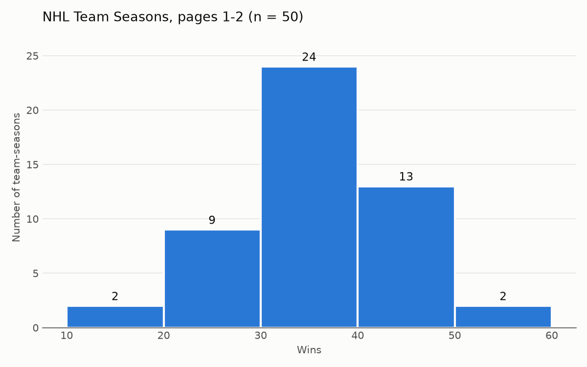
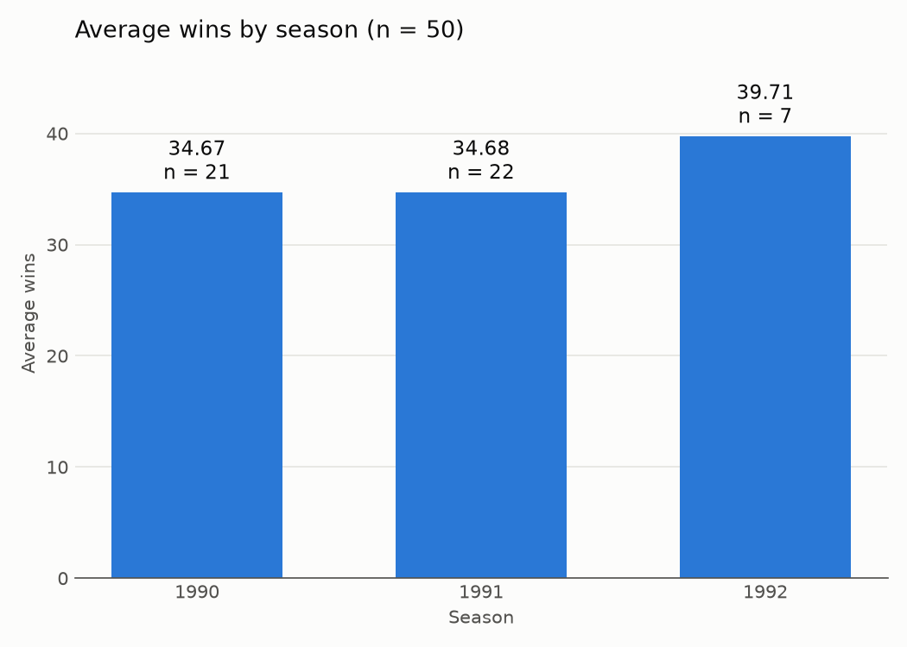

하키 팀 비교 도우미
불러오는 중…
이 사이트에는 팀별 상세 화면이 없어 수집된 목록 페이지로 연결합니다.
근거


처음 2페이지의 50개 기록만 분석했으며, 1992 시즌은 일부인 7개 기록만 포함되어 21~22개 기록이 포함된 1990·1991 시즌과 같은 무게로 비교하기 어렵다.
출처: Scrape This Site 하키 팀 목록 1~2페이지 · 2026-09-28 수집 · 팀-시즌 기록 50개
불러오는 중…
이 사이트에는 팀별 상세 화면이 없어 수집된 목록 페이지로 연결합니다.


처음 2페이지의 50개 기록만 분석했으며, 1992 시즌은 일부인 7개 기록만 포함되어 21~22개 기록이 포함된 1990·1991 시즌과 같은 무게로 비교하기 어렵다.
출처: Scrape This Site 하키 팀 목록 1~2페이지 · 2026-09-28 수집 · 팀-시즌 기록 50개